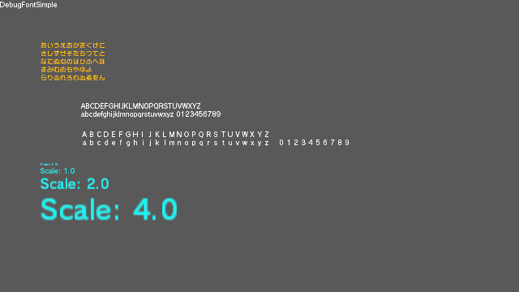

This sample program shows how to use the debug font rendering class.

Overview
This sample displays fonts using the DebugFontTextWriter class.
File Structure
This sample program is located in Samples/Sources/Applications/DebugFontSimple/ .
Required Environment
You must be able to use the screen display.
How to Use
Nothing specific.
Important Information
Nothing specific.
Execution Procedure
Build the sample program and then run it.
Description
The most basic demo that displays fonts using the DebugFontTextWriter class.
This sample program has the following flow.
- Initialize the graphics framework.
- Initialize the VI layer.
- Initialize the device.
- Initialize a memory pool.
- Initialize the swap chain.
- Initialize the queue.
- Initialize the viewport scissor.
- Initialize the command buffer.
- Initialize the descriptor pool.
- Initialize the debug font render class.
- Begin the loop.
- Render font characters.
- Create the command list.
- Execute the command list.
- Display the results on the screen.
- Return to the start of the loop.
- Free all objects used.